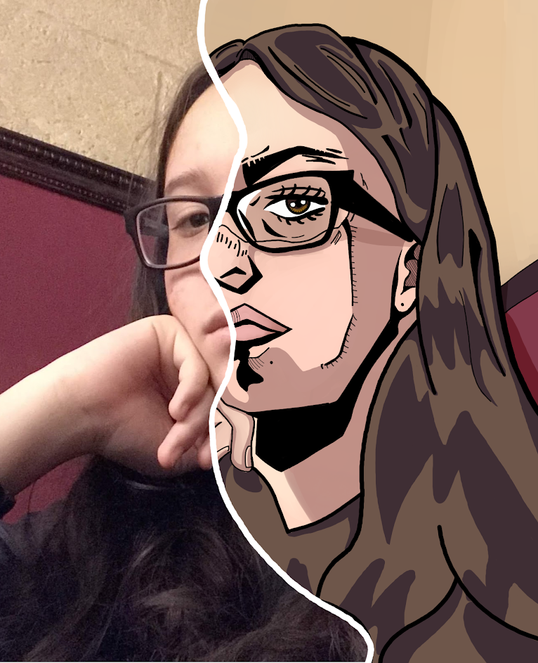

Welcome to my Portfolio!
Hello there! I am Diana Hernandez, a multimedia artist based in Peoria Arizona. I've spent the last 3 years conning my skills within the digital art field at my lovely school, Glendale Community College. Some of my current skills include graphic design, motion graphics/ animation, and photography. I specialize in designing flyers to provide that provide all the necessary information in one destinated place.I also specialize in making and editing videos with special effects. In my art, I am inspired by animation, fluid linework, and emotional expression. When I am not working, I enjoy traveling, reading, painting, caring for my plants, and nerdy things. If you want to check out my current works right now please click on any links located above.

About Me

From a young age, I was always interested in creating some form of art. Whether it was creating drawing on a piece of paper or trying to film a movie on my paren’s phone, I was always interested in creating something that I found to be entertaining. With this mindset, I set my educational path forwards and pursued a degree in Multimedia Arts. Throughout high school, I took as many art classes as I could such as drawing, painting, and photography to help strengthen my skill and understanding of the arts. I also took a film and design class where I learned to make movies and edit content using editing software within the Adobe Library. This is when I made the decision to follow the path of a Multimedia Artist. As of 2023, I am the first-generation Mexican-American to have graduated from any form of college in my family. I have graduated with a certificate in Digital Multimedia Arts. Since then I have been working internships that allow me to use my skills to the best of my ability.
Please email me at dianahernand.vega@gmail.com if you wish to contact me.